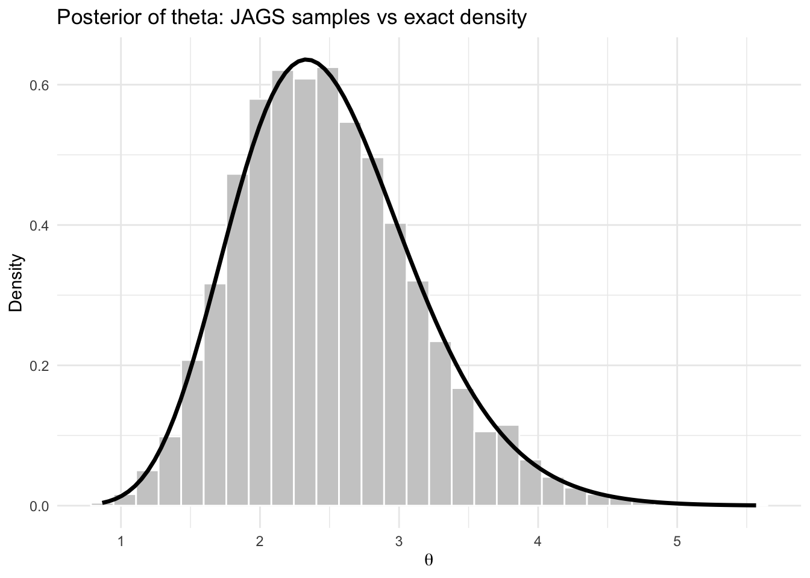
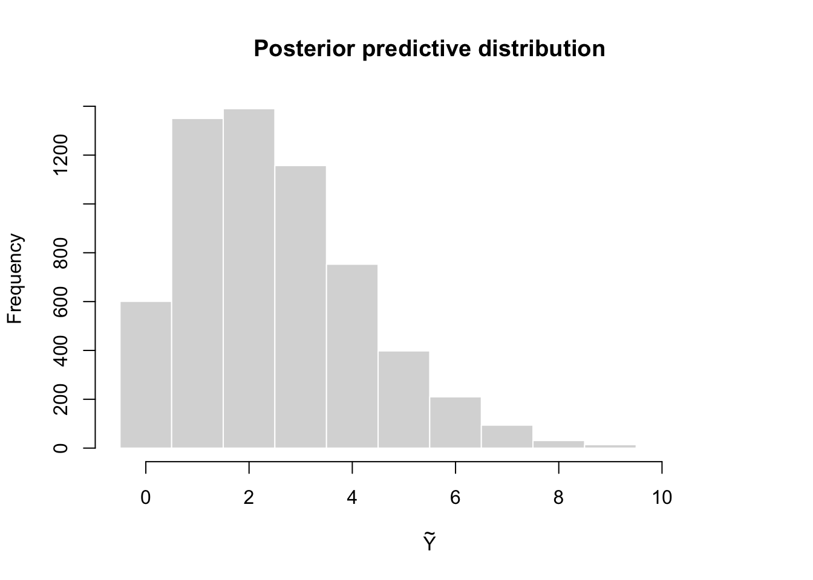
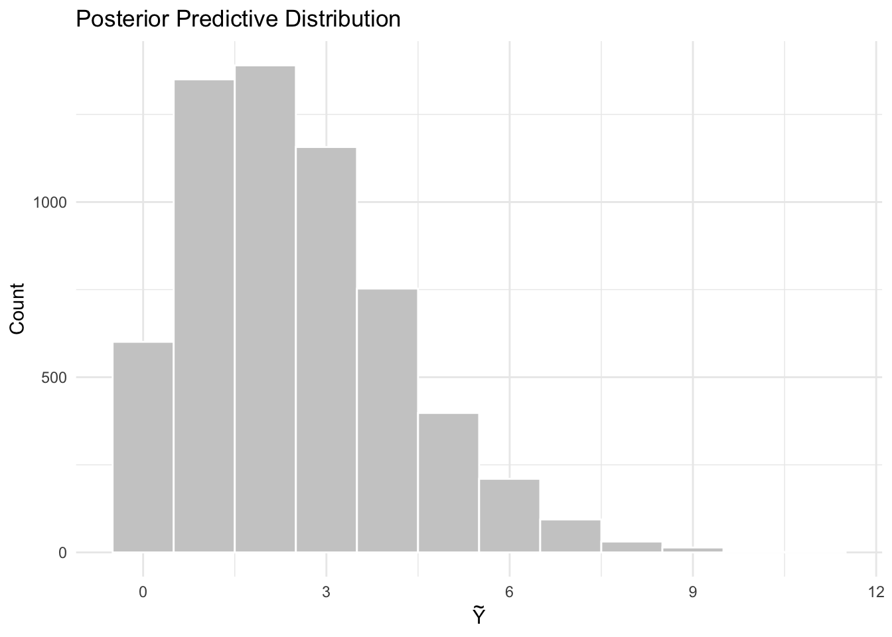

y <- c(3, 2, 4, 1, 3)
n <- length(y)
a <- 2
b <- 1
sum_y <- sum(y)
y[1] 3 2 4 1 3sum_y[1] 13So far, we have written Monte Carlo and Gibbs samplers directly in R. This is useful for understanding the mechanics of Bayesian computation, but it becomes inconvenient when models are more complicated.
JAGS stands for Just Another Gibbs Sampler. It is a program for fitting Bayesian hierarchical models using MCMC, especially Gibbs sampling and related methods.
JAGS uses the BUGS language, where BUGS stands for Bayesian inference Using Gibbs Sampling.
The basic idea is simple:
BUGS language is a model specification language. It is not a general programming language like R or Python.
Its role is to describe:
For example:
\[ Y_i \mid \theta \sim \text{Poisson}(\theta), \qquad \theta \sim \text{Gamma}(a,b) \]
Instead of writing the Gibbs sampler ourselves, we simply describe the model and JAGS handles the sampling.
BUGS was developed in the 1990s by David Spiegelhalter and colleagues at the University of Cambridge.
JAGS was created by Martyn Plummer in the early 2000s as a more flexible and open-source alternative to BUGS.
Both BUGS and JAGS have been widely used in academia and industry for Bayesian data analysis, especially in fields like ecology, epidemiology, and social sciences.
JAGS is designed to be compatible with BUGS models, so most BUGS code can be run in JAGS with little or no modification.
JAGS is often used in conjunction with R through packages like rjags and jagsUI, which provide an interface for running JAGS models from R.
The BUGS language has influenced the development of other probabilistic programming languages, such as Stan, nimble and PyMC3, which also allow users to specify Bayesian models in a high-level syntax.
JAGS continues to be maintained and updated, with the latest version being 4.3.2 as of 2026.
coda package is often used to analyze MCMC output from JAGS, providing tools for convergence diagnostics and posterior summaries.
A JAGS model is written inside a model {} block.
model {
for (i in 1:n) {
y[i] ~ dpois(theta)
}
theta ~ dgamma(a, b)
}The first part describes the likelihood, and the second part specifies the prior.
Stochastic nodes
Random variables are written using ~.
theta ~ dgamma(a, b)
y[i] ~ dpois(theta)Deterministic nodes
Deterministic relationships use <-.
sigma <- 1 / sqrt(tau)
mu[i] <- alpha + beta * x[i]Loops
Repeated data are handled with loops.
for (i in 1:n) {
y[i] ~ dnorm(mu, tau)
}Comments
Use # for comments.
# prior distribution
theta ~ dnorm(0, 0.01)Pay attention to the JAGS syntax. Sometimes it may be different from what you expect! For instance, JAGS uses precision rather than variance for normal distributions dnorm(mean, precision). Precision is
\[ \tau = \frac{1}{\sigma^2}. \]
or in the lecture, we used \(\tilde{\sigma}^2=1/\sigma^2\).
In R code, we write
tau <- 1 / sigma^2| Distribution | JAGS syntax |
|---|---|
| Normal | dnorm(mu, tau) |
| Poisson | dpois(lambda) |
| Binomial | dbin(p, n) |
| Bernoulli | dbern(p) |
| Gamma | dgamma(a, b) |
| Beta | dbeta(a, b) |
| Uniform | dunif(a, b) |
\[ Y \mid \theta \sim \text{Binomial}(n,\theta), \qquad \theta \sim \text{Beta}(a,b) \]
JAGS model:
model {
y ~ dbin(theta, n)
theta ~ dbeta(a, b)
}For multiple observations:
model {
for (i in 1:n) {
y[i] ~ dbern(theta)
}
theta ~ dbeta(a, b)
}\[ Y_i \mid \theta \sim \text{Poisson}(\theta), \qquad \theta \sim \text{Gamma}(a,b) \]
JAGS:
model {
for (i in 1:n) {
y[i] ~ dpois(theta)
}
theta ~ dgamma(a, b)
}\[ Y_i \mid \theta,\tau \sim \text{Normal}(\theta,\tau) \]
Priors
\[ \theta \sim \text{Normal}(\mu_0,\tau_0), \qquad \tau \sim \text{Gamma}(a,b) \]
JAGS model:
model {
for (i in 1:n) {
y[i] ~ dnorm(theta, tau)
}
theta ~ dnorm(mu0, tau0)
tau ~ dgamma(a, b)
sigma <- 1 / sqrt(tau)
}data_jags <- list(
y = y,
n = length(y),
a = 2,
b = 1
)params <- c("theta")library(jagsUI)
fit <- jags(
data = data_jags,
parameters.to.save = params,
model.file = textConnection(model_string),
n.chains = 3,
n.iter = 5000,
n.burnin = 1000
)
print(fit)Initial values
Optional but sometimes useful.
inits <- function() {
list(theta = 1)
}Posterior output
Typical outputs include
| Function | Meaning |
|---|---|
log(x) |
logarithm |
exp(x) |
exponential |
sqrt(x) |
square root |
pow(x, a) |
power |
step(x) |
indicator function |
Example:
tau <- pow(sigma, -2)Sometimes, for each of the data \(y_i\), you may want to have a different prior mean \(\mu_i\) that depends on covariates \(x_i\). This can be done as follows
for (i in 1:n) {
y[i] ~ dnorm(mu[i], tau)
mu[i] <- alpha + beta * x[i]
}In this section we fit a simple Bayesian Poisson model in JAGS. Suppose
\[ Y_1,\ldots,Y_n \mid \theta \sim \text{i.i.d. Poisson}(\theta), \]
with prior
\[ \theta \sim \text{Gamma}(a,b), \]
where the Gamma distribution is parameterized by shape \(a\) and rate \(b\).
We will:
jagsUI;We use the following toy dataset:
y <- c(3, 2, 4, 1, 3)
n <- length(y)
a <- 2
b <- 1
sum_y <- sum(y)
y[1] 3 2 4 1 3sum_y[1] 13Under the Poisson–Gamma model, the posterior distribution is available analytically:
\[ \theta \mid y \sim \text{Gamma}!\left(a+\sum_{i=1}^n y_i,; b+n\right). \]
So in this example,
\[ \theta \mid y \sim \text{Gamma}(2+13,;1+5)=\text{Gamma}(15,6). \]
This makes the example useful because we can compare the JAGS output to the exact answer.
Step 1: write the JAGS model
In BUGS language, the model is
model_string <- "
model {
# likelihood
for (i in 1:n) {
y[i] ~ dpois(theta)
}
# prior
theta ~ dgamma(a, b)
}
"
cat(model_string)
model {
# likelihood
for (i in 1:n) {
y[i] ~ dpois(theta)
}
# prior
theta ~ dgamma(a, b)
}A few notes:
dpois(theta) means Poisson with mean \(\theta\);dgamma(a, b) in JAGS uses shape and rate;theta is the parameter we want to estimate.Step 2: prepare the data and monitored parameters
JAGS needs the data in a named list
data_jags <- list(
y = y,
n = n,
a = a,
b = b
)
params <- c("theta")We will monitor only theta.
Step 3: choose initial values
Initial values are optional here, but we include them for completeness.
inits <- function() {
list(theta = 2)
}Step 4: run JAGS
library(jagsUI)
set.seed(8310)
fit <- jags(
data = data_jags,
inits = inits,
parameters.to.save = params,
model.file = textConnection(model_string),
n.chains = 3,
n.iter = 5000,
n.burnin = 1000,
n.thin = 2
)
Processing function input.......
Done.
Compiling model graph
Resolving undeclared variables
Allocating nodes
Graph information:
Observed stochastic nodes: 5
Unobserved stochastic nodes: 1
Total graph size: 9
Initializing model
Adaptive phase.....
Adaptive phase complete
Burn-in phase, 1000 iterations x 3 chains
Sampling from joint posterior, 4000 iterations x 3 chains
Calculating statistics.......
Done. Now print the summary:
print(fit)JAGS output for model '4', generated by jagsUI.
Estimates based on 3 chains of 5000 iterations,
adaptation = 100 iterations (sufficient),
burn-in = 1000 iterations and thin rate = 2,
yielding 6000 total samples from the joint posterior.
MCMC ran for 0 minutes at time 2026-03-15 14:42:30.281138.
mean sd 2.5% 50% 97.5% overlap0 f Rhat n.eff
theta 2.491 0.642 1.411 2.435 3.902 FALSE 1 1 6000
deviance 16.957 1.247 16.067 16.481 20.584 FALSE 1 1 6000
Successful convergence based on Rhat values (all < 1.1).
Rhat is the potential scale reduction factor (at convergence, Rhat=1).
For each parameter, n.eff is a crude measure of effective sample size.
overlap0 checks if 0 falls in the parameter's 95% credible interval.
f is the proportion of the posterior with the same sign as the mean;
i.e., our confidence that the parameter is positive or negative.
DIC info: (pD = var(deviance)/2)
pD = 0.8 and DIC = 17.734
DIC is an estimate of expected predictive error (lower is better).This output includes posterior means, standard deviations, credible intervals, and convergence diagnostics.
Step 5: compare with the exact posterior
The exact posterior is
\[ \theta \mid y \sim \text{Gamma}(15,6). \]
So the exact posterior mean is
\[ E(\theta \mid y) = \frac{15}{6} = 2.5. \]
The exact posterior variance is
\[ \mathrm{Var}(\theta \mid y) = \frac{15}{6^2} = \frac{15}{36}. \]
We can compute the exact summaries in R:
shape_post <- a + sum_y
rate_post <- b + n
exact_mean <- shape_post / rate_post
exact_var <- shape_post / rate_post^2
exact_ci <- qgamma(c(0.025, 0.975), shape = shape_post, rate = rate_post)
exact_mean[1] 2.5exact_var[1] 0.4166667exact_ci[1] 1.399231 3.914937The JAGS summary for theta should be very close to these values.
Step 6: extract posterior samples
The posterior samples are stored inside the fitted object.
theta_post <- fit$samples[, , "theta"]
theta_post <- as.vector(theta_post)
head(theta_post)[[1]]
Markov Chain Monte Carlo (MCMC) output:
Start = 1002
End = 1014
Thinning interval = 2
theta deviance
[1,] 1.560872 18.94180
[2,] 2.548968 16.07122
[3,] 3.785898 18.15506
[4,] 2.465718 16.10206
[5,] 2.216374 16.38049
[6,] 2.061858 16.71422
[7,] 2.080451 16.66675
[[2]]
Markov Chain Monte Carlo (MCMC) output:
Start = 1002
End = 1014
Thinning interval = 2
theta deviance
[1,] 2.597255 16.06616
[2,] 2.152139 16.50281
[3,] 2.207936 16.39529
[4,] 2.923875 16.25254
[5,] 2.964158 16.29960
[6,] 2.286347 16.27207
[7,] 3.593582 17.58737
[[3]]
Markov Chain Monte Carlo (MCMC) output:
Start = 1002
End = 1014
Thinning interval = 2
theta deviance
[1,] 1.738204 17.91732
[2,] 2.491540 16.08941
[3,] 2.296215 16.25878
[4,] 1.960389 17.01161
[5,] 2.444164 16.11480
[6,] 3.173188 16.61816
[7,] 3.100759 16.49421
attr(,"class")
[1] "mcmc.list"length(theta_post)[1] 3These are MCMC draws from the posterior distribution of \(\theta\).
Step 7: posterior histogram and exact density
Now compare the JAGS samples to the exact Gamma posterior density.
library(ggplot2)
theta_post <- as.numeric(as.matrix(fit$samples)[,"theta"])
theta_df <- data.frame(theta = theta_post)
ggplot(theta_df, aes(x = theta)) +
geom_histogram(aes(y = after_stat(density)),
bins = 30,
fill = "grey80",
color = "white") +
stat_function(
fun = dgamma,
args = list(shape = shape_post, rate = rate_post),
linewidth = 1.2,
color = "black"
) +
labs(
title = "Posterior of theta: JAGS samples vs exact density",
x = expression(theta),
y = "Density"
) +
theme_minimal()
The histogram of the JAGS samples should align closely with the exact posterior density.
Step 8: posterior probability of an event
Suppose we want to estimate
\[ \Pr(\theta < 2.8 \mid y). \]
From the JAGS samples:
mean(theta_post < 2.8)[1] 0.7071667From the exact posterior:
pgamma(2.8, shape = shape_post, rate = rate_post)[1] 0.702895These two values should be close.
Step 9: posterior predictive simulation
Suppose \(\tilde Y\) is a future observation from the same population. The posterior predictive distribution is
\[ p(\tilde y \mid y) ＝ \int p(\tilde y \mid \theta),p(\theta \mid y),d\theta. \]
Using the JAGS samples, we can simulate from the posterior predictive distribution:
set.seed(8310)
y_tilde <- rpois(length(theta_post), lambda = theta_post)
head(y_tilde)[1] 1 3 2 2 1 1mean(y_tilde)[1] 2.486var(y_tilde)[1] 2.957964hist(y_tilde,
breaks = seq(-0.5, max(y_tilde) + 0.5, by = 1),
col = "grey85",
border = "white",
main = "Posterior predictive distribution",
xlab = expression(tilde(Y)))
This histogram represents the distribution of a future observation \(\tilde Y\) given the observed data \(y\).
Interpretation
This example illustrates the full JAGS workflow:
Because the Poisson–Gamma model is conjugate, this example is especially useful for learning. The JAGS output should agree closely with the exact posterior
\[ \text{Gamma}(15,6). \]
Full code in one chunk
library(jagsUI)
library(coda)
library(ggplot2)
# ===============================
# Data
# ===============================
y <- c(3, 2, 4, 1, 3)
n <- length(y)
a <- 2
b <- 1
sum_y <- sum(y)
# ===============================
# JAGS model
# ===============================
model_string <- "
model {
for (i in 1:n) {
y[i] ~ dpois(theta)
}
theta ~ dgamma(a, b)
}
"
# ===============================
# Data list for JAGS
# ===============================
data_jags <- list(
y = y,
n = n,
a = a,
b = b
)
params <- c("theta")
inits <- function() {
list(theta = 2)
}
# ===============================
# Run JAGS
# ===============================
set.seed(8310)
fit <- jags(
data = data_jags,
inits = inits,
parameters.to.save = params,
model.file = textConnection(model_string),
n.chains = 3,
n.iter = 5000,
n.burnin = 1000,
n.thin = 2
)
Processing function input.......
Done.
Compiling model graph
Resolving undeclared variables
Allocating nodes
Graph information:
Observed stochastic nodes: 5
Unobserved stochastic nodes: 1
Total graph size: 9
Initializing model
Adaptive phase.....
Adaptive phase complete
Burn-in phase, 1000 iterations x 3 chains
Sampling from joint posterior, 4000 iterations x 3 chains
Calculating statistics.......
Done. print(fit)JAGS output for model '4', generated by jagsUI.
Estimates based on 3 chains of 5000 iterations,
adaptation = 100 iterations (sufficient),
burn-in = 1000 iterations and thin rate = 2,
yielding 6000 total samples from the joint posterior.
MCMC ran for 0 minutes at time 2026-03-15 14:35:57.462946.
mean sd 2.5% 50% 97.5% overlap0 f Rhat n.eff
theta 2.491 0.642 1.411 2.435 3.902 FALSE 1 1 6000
deviance 16.957 1.247 16.067 16.481 20.584 FALSE 1 1 6000
Successful convergence based on Rhat values (all < 1.1).
Rhat is the potential scale reduction factor (at convergence, Rhat=1).
For each parameter, n.eff is a crude measure of effective sample size.
overlap0 checks if 0 falls in the parameter's 95% credible interval.
f is the proportion of the posterior with the same sign as the mean;
i.e., our confidence that the parameter is positive or negative.
DIC info: (pD = var(deviance)/2)
pD = 0.8 and DIC = 17.734
DIC is an estimate of expected predictive error (lower is better).# ===============================
# Exact posterior
# ===============================
shape_post <- a + sum_y
rate_post <- b + n
exact_mean <- shape_post / rate_post
exact_var <- shape_post / rate_post^2
exact_ci <- qgamma(c(0.025,0.975), shape = shape_post, rate = rate_post)
exact_mean[1] 2.5exact_var[1] 0.4166667exact_ci[1] 1.399231 3.914937# ===============================
# Extract posterior samples
# ===============================
theta_post <- as.numeric(as.matrix(fit$samples)[,"theta"])
theta_df <- data.frame(theta = theta_post)
# ===============================
# Posterior distribution plot
# ===============================
ggplot(theta_df, aes(x = theta)) +
geom_histogram(aes(y = after_stat(density)),
bins = 30,
fill = "grey80",
color = "white") +
stat_function(
fun = dgamma,
args = list(shape = shape_post, rate = rate_post),
linewidth = 1.2,
color = "black"
) +
labs(
title = "Posterior of theta: JAGS samples vs exact density",
x = expression(theta),
y = "Density"
) +
theme_minimal()
# ===============================
# Posterior probability example
# ===============================
mean(theta_post < 2.8)[1] 0.7071667pgamma(2.8, shape = shape_post, rate = rate_post)[1] 0.702895# ===============================
# Posterior predictive simulation
# ===============================
set.seed(8310)
y_tilde <- rpois(length(theta_post), lambda = theta_post)
pred_df <- data.frame(y_tilde = y_tilde)
# ===============================
# Posterior predictive plot
# ===============================
ggplot(pred_df, aes(x = y_tilde)) +
geom_histogram(
binwidth = 1,
fill = "grey80",
color = "white",
boundary = -0.5
) +
labs(
title = "Posterior Predictive Distribution",
x = expression(tilde(Y)),
y = "Count"
) +
theme_minimal()
~ denotes a distribution.<- denotes deterministic relationships.<- and stochastic ~Reference: